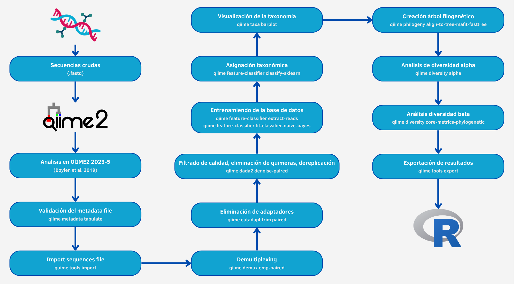

Metagenomic Report
Mini Chat RAG (beta)
¡Hola! Soy Geni, el asistente inteligente de GenoScribe. Estoy aquí para ayudarte a explorar de forma interactiva el contenido de este informe bioinformático.
Cuando me haces una pregunta, primero intento reconocer si coincide con alguno de los patrones o expresiones que conozco. Si encuentro una coincidencia, te responderé directamente con una respuesta predefinida, diseñada para ser rápida, clara e incluso un poco ingeniosa. Si no reconozco el patrón, entonces activo mis herramientas de búsqueda: genero representaciones vectoriales (embeddings) y busco los fragmentos más relevantes entre varios documentos —incluyendo el propio informe, archivos PDF y HTML externos, y sesiones de preguntas y respuestas (QA). A partir de esa información, creo un resumen que intenta ofrecerte una respuesta coherente y útil basada en el contenido existente.
Se debe tener en cuenta que este entorno es experimental. No utilizo grandes modelos de lenguaje, por lo que algunas respuestas pueden ser aproximadas o incompletas. El objetivo principal es facilitar una visualización rápida, comprensible y reproducible de la información contenida en los documentos, permitiendo una exploración más dinámica del informe.
Actualmente, los resultados pueden variar en precisión, ya que empleo modelos ligeros y locales para asegurar que la aplicación funcione en cualquier entorno sin necesidad de servidores externos. Sin embargo, la estructura del sistema está preparada para mejorar notablemente su rendimiento en el futuro mediante la integración con modelos más avanzados o APIs externas. Para comenzar, simplemente escribe tu pregunta en el campo inferior y deja que yo me encargue del resto. ¡Prometo poner todo mi código en ello!
Pestaña
Metodología y Herramientas
▼
Esta pestaña tiene un carácter eminentemente técnico y documenta cómo se ha generado el informe, qué datos se han utilizado, qué herramientas han intervenido y cómo se ha organizado el flujo de trabajo. Su finalidad es que cualquier persona que consulte este informe pueda comprender los procedimientos realizados, verificar los resultados y, si lo desea, reproducir el análisis completo con exactitud.
Durante la elaboración del informe, el usuario puede seleccionar uno o varios marcadores:
- 16S rRNA ⇒ para la identificación de bacterias y arqueas, ampliamente usado en microbiomas ambientales y clínicos.
- 18S rRNA ⇒ para caracterizar eucariotas, como protozoos y hongos, complementando o sustituyendo al 16S según el estudio.
- ITS (Internal Transcribed Spacer) ⇒ región altamente variable utilizada principalmente para la identificación de hongos a nivel de género y especie.
Los datos del informe provienen de dos etapas principales:
-
Control de calidad inicial ⇒ realizado con miARma‑Seq (Eduardo Andrés-León et al.), procesando los archivos
FASTQy generando reportes de calidad mediante FastQC y MultiQC. - Análisis metagenómico ⇒ llevado a cabo con QIIME2, procesando los marcadores seleccionados, realizando denoising con DADA2, generando tablas de abundancia y métricas de diversidad, así como predicciones funcionales con PICRUSt2 y análisis estadístico en R mediante MetagenomeSeq y ALDEx2.
Una vez obtenidos los resultados, Nextflow organiza los datos y prepara los archivos de configuración que sirven como interfaz con Quarto:
-
params.yml⇒ contiene parámetros específicos de la ejecución, rutas, opciones de visualización, marcador analizado y versión del informe. -
_quarto.yml⇒ define la estructura del informe, incluyendo plantillas, pestañas, secciones y rutas internas, generado medianteyaml_generator.py.
Cuando todos los procesos previos han finalizado, Nextflow invoca quarto render, generando el informe HTML final en la carpeta report/. Este flujo asegura que el documento refleje de manera completa, consistente y reproducible todos los resultados.
Gracias a esta arquitectura modular:
- Cada etapa (control de calidad, análisis metagenómico, análisis estadístico, generación del informe) puede ejecutarse de forma independiente o conjunta.
- Se permite combinar diferentes marcadores según las necesidades del estudio sin comprometer la trazabilidad ni la reproducibilidad.
- Se facilita la verificación y reconstrucción del informe en el futuro con los mismos datos y parámetros.
Además, esta pestaña incluye referencias a manuales, repositorios y documentación complementaria, accesibles mediante tarjetas de información. Para cualquier duda o soporte adicional, los datos de contacto se encuentran en la pestaña de inicio.
Tabla de contenidos de esta pestaña
1. Workflows y herramientas empleadas en la generación de resultados
El proceso de análisis metagenómico llevado a cabo en este estudio se sustenta en la combinación de dos herramientas principales: miARma-Seq y QIIME 2. Ambas se emplean de forma complementaria para garantizar la calidad de los datos y obtener resultados biológicamente interpretables sobre la composición microbiana de las muestras analizadas.
En una primera fase, miARma-Seq se utilizó para realizar el control de calidad de los archivos FASTQ originales. Este módulo evalúa la integridad de las lecturas y filtra aquellas que no cumplen con los criterios de calidad establecidos, asegurando que las secuencias que pasan a las etapas posteriores sean adecuadas para el análisis metagenómico. Aunque miARma-Seq fue concebido originalmente como un pipeline para estudios de RNA-Seq, su estructura modular y configurable mediante archivos .ini permite su adaptación a distintos tipos de datos, como los de amplicones 16S, 18S o ITS.
En la segunda fase, los datos procesados fueron analizados mediante QIIME 2 (Quantitative Insights Into Microbial Ecology), una de las plataformas más consolidadas para el estudio de comunidades microbianas a partir de secuencias de amplicones. QIIME 2 ofrece un flujo de trabajo reproducible que abarca desde la importación y desmultiplexado de las lecturas hasta la generación de métricas de diversidad, la asignación taxonómica y la visualización de resultados.
En conjunto, estos dos workflows proporcionan una estrategia robusta y reproducible: miARma-Seq garantiza la calidad y limpieza de las lecturas crudas, mientras que QIIME 2 permite profundizar en la composición y diversidad microbiana de las muestras. En los siguientes apartados se describen ambos pipelines en detalle, incluyendo su configuración, principales etapas de ejecución y resultados obtenidos.
1.1. Workflow empleado con miARma-Seq (control de calidad)
La herramienta miARma‑Seq es un pipeline integral diseñado para análisis de RNA‑Seq (mRNA, miRNA y circRNA), desarrollado por Eduardo Andrés‑León et al. Incluye múltiples módulos que permiten procesar datos crudos de manera modular y reproducible:
-
Control de calidad inicial ⇒ Evaluación de archivos
FASTQmediante FastQC, con generación de reportes individuales y resúmenes globales usando MultiQC, permitiendo detectar adaptadores, sesgos de composición y problemas de calidad por posición. - Recorte de lecturas ⇒ Eliminación de adaptadores y bases de baja calidad mediante Cutadapt o Reaper, optimizando los datos antes de alineamiento.
- Alineamiento ⇒ Mapeo contra genomas de referencia usando alineadores como HISAT2, STAR, Bowtie o BWA, dependiendo del tipo de RNA.
- Cuantificación ⇒ Conteo de genes o isoformas con featureCounts, detección de circRNAs con CIRI y cuantificación de miRNAs con miRDeep2.
- Análisis diferencial ⇒ Identificación de genes o miRNAs diferencialmente expresados mediante edgeR o NOISeq, según el diseño experimental.
- Análisis funcional ⇒ Predicción de interacciones miRNA‑mRNA, correlaciones inversas de expresión y análisis de enriquecimiento funcional (GO, KEGG).
Aunque miARma‑Seq ofrece un conjunto completo de módulos para análisis de RNA‑Seq, en este informe únicamente se ha utilizado el módulo de control de calidad (QC) para los archivos FASTQ de nuestro análisis metagenómico. Este paso es fundamental para asegurar que las lecturas crudas de los marcadores seleccionados (16S, 18S, ITS) sean de alta calidad antes de ser procesadas con QIIME2 o cualquier otro pipeline de análisis.
Toda la documentación de miARma‑Seq y su repositorio oficial están disponibles en GitHub, donde se pueden consultar todos los módulos, parámetros y ejemplos de uso. A continuación se muestra de forma esquemática el workflow completo de la herramienta:

Para garantizar reproducibilidad y modularidad, miARma‑Seq utiliza un archivo de configuración con extensión .ini. Este archivo es esencial, ya que contiene todos los parámetros necesarios para ejecutar cada módulo del pipeline sin necesidad de introducir comandos complejos en la línea de comandos. En el contexto de este informe de metagenómica, el archivo .ini está configurado únicamente para activar el módulo de control de calidad, aunque puede modificarse para ejecutar alineamiento, cuantificación o análisis diferencial si se requiere.
Así, para este informe, el archivo .ini utilizado se encuentra en el siguiente directorio:
/workspace/data/03-EXT-25-Metagenomic/Analisis/miARma_workflow.ini.
Como se ha comentado anteriormene, este archivo configura únicamente el módulo de control de calidad, pero se puede consultar la estructura completa que incluiría alineamiento, cuantificación y análisis diferencial si se trabajase con RNA‑Seq. Dicho archivo lo podemos visualizar mediante el siguiente iframe o para más detalle, en una pestaña nueva haciendo click en el botón que se encuentra justo debajo. Además, también podemos descargar dicho archivo en el caso de que fuera necesario mediante el botón específico ubicado justo al lado (para que dicho botón de descarga funcione se debe de abrir el informe (index.html) mediante un servidor para activar las funciones de javascript, tal y como se ha indicado en la pestaña de inicio).
Un archivo .ini está organizado en secciones bien definidas, como [General], [QC], [Aligner], [ReadCount], cada una dedicada a un módulo específico del pipeline. En cada sección se definen parámetros clave, incluyendo:
- Rutas de entrada y salida de los archivos.
- Tipo de datos a procesar (por ejemplo, RNA, metagenómica).
- Número de hilos o núcleos a utilizar.
- Herramientas específicas a emplear en cada paso.
- Criterios estadísticos o filtros de calidad aplicados.
La ejecución de este pipeline en un entorno de High-Performance Computing (HPC) se realiza mediante un archivo de script .sh, que automatiza la carga de módulos, la asignación de recursos (como memoria y núcleos) y la ejecución de miARma‑Seq con el archivo de configuración .ini.
/workspace/data/03-EXT-25-Metagenomic/Analisis/Slurm.sh.
Y podemos visualizarlo de forma similar mediante el siguiente iframe, así como prodecer con su respectiva descarga.
Gracias a esta estructura, es posible ejecutar de manera reproducible el control de calidad de cualquier conjunto de archivos FASTQ, y en futuras extensiones del análisis metagenómico se podrían activar otros módulos del pipeline para incluir alineamiento, cuantificación o análisis diferencial, integrando así un flujo de trabajo completo y modular.
Para más información sobre miARma‑Seq y su pipeline completo, se puede consultar el repositorio oficial en GitHub: miARma‑Seq.
1.2. Workflow empleado con QIIME 2 (análisis metagenómico)
QIIME2 es una plataforma especializada para análisis de metagenómica de amplicones, especialmente del marcador 16S, con un enfoque modular, reproducible y documentado. Su flujo de trabajo incluye múltiples etapas que permiten procesar, filtrar y analizar las secuencias de manera rigurosa, integrando herramientas estadísticas y visualización avanzada.
- Secuencias crudas (.fastq) ⇒ Se importan los archivos de secuenciación sin procesar, que contienen todas las lecturas de ADN de las muestras.
- Validación del archivo de metadatos ⇒ Se comprueba que la información de cada muestra (por ejemplo, grupos experimentales) esté correctamente formateada y consistente con los datos de secuenciación.
-
Importación de secuencias ⇒ Conversión de los archivos
.fastqal formato nativo de QIIME2, que permite la ejecución de los siguientes pasos del pipeline. - Demultiplexing ⇒ Separación de lecturas por muestra utilizando los índices o códigos de barras, asignando cada secuencia a su muestra de origen.
- Filtrado de calidad, eliminación de quimeras y desreplicación ⇒ Se eliminan secuencias de baja calidad y quiméricas (artefactos de PCR), y se generan secuencias únicas (ASVs, Amplicon Sequence Variants) que representan las variantes biológicas reales.
- Asignación taxonómica ⇒ Cada ASV se clasifica en niveles taxonómicos (especie, género, familia, etc.) usando bases de referencia.
- Entrenamiento de la base de datos ⇒ Se entrena un clasificador de aprendizaje automático con bases de referencia (como SILVA o Greengenes) para mejorar la precisión de la asignación taxonómica.
- Visualización de la taxonomía ⇒ Se generan gráficos que muestran la composición microbiana de cada muestra y del conjunto de datos.
- Creación de árbol filogenético ⇒ Se construye un árbol filogenético que representa las relaciones evolutivas entre los ASVs, esencial para análisis de diversidad basados en distancia filogenética.
- Análisis de diversidad alfa y beta ⇒ Cálculo de métricas de diversidad alfa (dentro de cada muestra) y beta (entre muestras) para comparar la riqueza, uniformidad y composición de las comunidades microbianas.
- Exportación de resultados ⇒ Las tablas de ASVs, la asignación taxonómica y las métricas de diversidad se exportan a formatos compatibles con R u otros programas, facilitando análisis estadísticos, visualizaciones avanzadas y predicciones funcionales.
Mediante la siguiente imagen podemos observar de forma más visual el workflow completo descrito anteriormente y seguido con esta herramienta:

{kind=link}
El uso combinado de QIIME2 y R permite un análisis completo y reproducible, integrando diversidad, funcionalidad y estadística avanzada. La documentación oficial de QIIME2 está disponible en https://qiime2.org/.
En conjunto, ambos pipelines (miARma‑Seq para control de calidad y QIIME2 para análisis metagenómico) se integran mediante Nextflow para generar un informe reproducible en Quarto. Esto asegura trazabilidad, modularidad y claridad en la interpretación de los resultados.
2. Estructura de los datos y resultados generados
Una vez completadas las fases de control de calidad (miARma-Seq) y análisis metagenómico (QIIME 2), los resultados obtenidos se organizan en una estructura de directorios que sirve como base para la generación de este informe automatizado. Esta estructura define la ubicación de los archivos intermedios, los resultados finales y los metadatos asociados a cada etapa del análisis, garantizando la trazabilidad y la reproducibilidad del flujo de trabajo completo.
Esta sección, al igual que el resto de esta pestaña dedicada a la metodología del desarrollo de este informe, tiene un propósito puramente técnico y está pensada como una referencia interna para el usuario que generó el informe. Su objetivo es facilitar la comprensión y el recuerdo de cómo estaban organizados los datos de salida del proyecto, de modo que, pasado un tiempo, sea posible revisar rápidamente la estructura de resultados sin necesidad de volver al entorno de análisis original.
A continuación se muestra la ruta del directorio principal donde se encuentran los datos y resultados generados para este proyecto:
/workspace/data/03-EXT-25-Metagenomic
A continuación se muestra la estructura completa de dicho directorio. Esta representación permite visualizar los archivos y subcarpetas que se emplearon como base para la construcción del informe:
Explorar los archivos de la carpeta “03-EXT-25-Metagenomic” aquí
Tras visualizar la estructura de forma interactiva, se presenta a continuación un desglose detallado de las carpetas y archivos generados durante el análisis de metagenómico. Esta organización está diseñada para facilitar la reproducibilidad del análisis, la trazabilidad de los resultados y su interpretación posterior.
-
03-EXT-25-Metagenomic/Analisis/reads/16S/⇒ Contiene los archivos de lectura crudos (FASTQ) de todas las muestras de 16S, preparados para su procesamiento con QIIME2. Aquí se mantiene la correspondencia entre los identificadores de las muestras y sus archivos de lectura, garantizando la trazabilidad desde los datos originales hasta los resultados finales. -
03-EXT-25-Metagenomic/Resultados/Def_(16S/18S/ITS)/⇒ Carpeta principal que agrupa los resultados procesados por QIIME2 y los análisis de predicción funcional de las comunidades microbianas. Su contenido se organiza de forma modular:-
core-metrics-results/→ Contiene archivos.qzvgenerados por QIIME2 con métricas de diversidad alfa y beta, composición microbiana y análisis de distancia entre muestras. Estos ficheros pueden visualizarse interactivamente mediante QIIME2 View o dentro de este informe. -
sample-metadata.tsv→ Archivo de metadatos de las muestras, incluyendo información sobre tipo de muestra, condición experimental, replicados y otros atributos relevantes. Este archivo es fundamental para realizar análisis estadísticos y comparativos precisos. -
exported/→ Contiene resultados de abundancia diferencial exportados para análisis complementarios en R o Excel. La organización interna incluye subcarpetas por nivel taxonómico (genero/,familia/), cada una con:-
Archivos
.xlsxcon los resultados estadísticos de las comparaciones entre grupos. - Gráficos tipo volcano que destacan los organismos más y menos abundantes, facilitando la interpretación rápida de los cambios significativos.
-
Archivos
-
Resultados de predicción funcional (PICRUSt / Pycrust) → Archivos ubicados directamente en
Resultados/Def_(16S/18S/ITS)/que contienen nombres indicativos comoMetagenomeSeq,glm_test_p_valuesopca_p_0,05_all. Estos ficheros permiten evaluar la potencial funcionalidad de las comunidades microbianas, identificando rutas metabólicas o funciones asociadas a los organismos más abundantes.
-
Esta organización clara y modular no solo facilita la generación automática del informe, sino que también garantiza que todos los datos y resultados sean fácilmente localizables, interpretables y reutilizables. Es especialmente útil para la documentación de proyectos de largo plazo, revisiones posteriores o colaboración entre diferentes miembros del equipo de análisis.
3. Generación automatizada del informe
Una vez obtenidos los datos procesados mediante los workflows de miARma‑Seq (control de calidad) y QIIME2 (análisis metagenómico) y mostrada la estructura del directorio en el cuál se encuentran los resultados generados a partir de todo el proceso de análisis, el siguiente paso consiste en la generación automatizada del informe final. Esta sección tiene como objetivo documentar de manera clara y reproducible todo el proceso mediante el cual se construye el informe, detallando la organización de los archivos de ejecución, la integración de herramientas y la configuración utilizada.
En particular, se abordarán los siguientes aspectos:
- 3.1. Estructura del directorio de ejecución ⇒ Se mostrará la ubicación y organización de los archivos y carpetas desde los cuales se ejecuta el pipeline, incluyendo los scripts de Nextflow y los archivos asociados de Quarto. Esto permite al usuario técnico entender dónde se encuentran los datos, resultados intermedios y archivos de configuración necesarios para generar el informe.
-
3.2. Integración de Nextflow y Quarto ⇒ Se explicará cómo se ha utilizado
Nextflowpara automatizar la ejecución de Quarto y la generación del informe final, describiendo el rol de los scripts principales (main.nf) y cómo se coordinan las distintas etapas del pipeline. -
3.3. Configuración del archivo
_quarto.ymlyparams.yml⇒ Se mostrarán los archivos de configuración que permiten reproducir el informe exacto, incluyendo rutas de entrada, parámetros de análisis y opciones de visualización. Esta documentación asegura que cualquier usuario técnico pueda regenerar el informe con los mismos resultados en el futuro, garantizando trazabilidad y reproducibilidad.
El propósito de esta sección es proporcionar un registro técnico completo del flujo de trabajo utilizado para generar el informe, de manera que cualquier persona que vuelva a consultar el proyecto pueda entender de forma clara cómo se ensamblaron los datos, qué herramientas se utilizaron y cómo se configuró todo el entorno de ejecución.
3.1. Estructura del directorio de ejecución
En esta subsección se describe la estructura de archivos y carpetas desde la cual se ejecuta el pipeline de metagenómica que genera el informe automatizado. Esta información es fundamental para entender cómo se organizan los datos de entrada, los resultados intermedios y los archivos de configuración de Quarto y Nextflow.
La ruta raíz desde la cual se ejecuta este pipeline es:
/workspace/GenoScribe/2-pipelines/3-metagenomic
A continuación se presenta la estructura completa del directorio correspondiente a este proyecto. Es importante destacar que los elementos listados (tanto archivos como subcarpetas) no representan enlaces interactivos, sino que se muestran únicamente para ilustrar la organización interna de los contenidos. Esta representación permite al lector comprender de manera clara y visual cómo se distribuyen los distintos componentes del proyecto, facilitando la navegación conceptual del directorio sin necesidad de acceder directamente a cada archivo.
- report
- resources
- work
- _quarto.yml
- index.qmd
- main.nf
- nextflow.config
- params.yml
- run_cleaning_dir.sh
- run_pipeline_shell.sh
- run_pipeline_shiny.sh
Explorar los archivos de la carpeta “3-metagenomic” aquí
A continuación se detalla la organización principal del directorio raíz del pipeline (3-metagenomic). Esta descripción está pensada como referencia técnica: indica qué hace cada archivo o carpeta, dónde se guardan los datos generados y cómo se conectan las piezas para producir el report final.
-
_quarto.yml,index.qmd⇒ Archivos base de Quarto que definen la estructura del informe (toc, formatos, parámetros globales) y la página de índice. Cada pestaña del informe está representada por un.qmd. -
main.nf,nextflow.config,params.yml⇒ Ficheros de control del pipeline de Nextflow:-
main.nf→ script principal que orquesta las tareas (organización de los resultados, creación de scripts de configuración y renderizado del informe). -
nextflow.config→ configuración de ejecución (perfiles, recursos, módulos, rutas por defecto). -
params.yml→ parámetros concretos del proyecto (paths de entrada, opciones del pipeline) — generado o rellenado por el usuario/Nextflow para cada corrida.
-
-
report/⇒ Carpeta de salida donde Nextflow / Quarto depositan el informe final (HTML) y materiales derivados listos para compartir. -
resources/⇒ Repositorio local de recursos y de los resultados consolidados. A alto nivel:-
resources/1-essential/→ recursos usados por las plantillas y por los.qmd:-
1-images/→ iconos y gráficas (portada, diagramas de workflow, favicon, etc.). -
2-archives/→ copias de ficheros de interés (scripts, logs, ejemplos de.ini/.sh) usados como referencia o para descarga en la pestaña de metodología. -
3-scripts/→ scripts auxiliares (R, Quarto templates, CSS, JS, Python y Bash) que apoyan la construcción del informe y la generación de artefactos (p. ej.yaml_generator.py).
-
-
resources/2-nextflow-results/→ ubicación donde Nextflow consolida los resultados del/los proyecto(s):-
1-project-data/{nombre_del_proyecto}/→ copia local del proyecto procesado (entrada + resultados). Nextflow copia aquí los datos de trabajo para que Quarto los consuma de forma estable y reproducible. -
2-fastqc-report/→ salida centralizada de los reports de FastQC / MultiQC generados por el QC inicial. -
3-analisis-estadistico/→ resultados exportados y productos intermedios listos para análisis estadísticos adicionales (por ejemplo exportes para R, tablas xlsx, gráficas volcán, etc.).
-
-
-
run_cleaning_dir.sh,run_pipeline_shell.sh,run_pipeline_shiny.sh⇒ Scripts de utilidades en la raíz.-
run_pipeline_shell.sh→ wrapper para lanzar el pipeline desde la terminal (ejecuta Nextflow con el perfil/params adecuados). -
run_pipeline_shiny.sh→ invoca una interfaz gráfica (Shiny) que permite ejecutar el pipeline mediante un formulario para usuarios menos técnicos. -
run_cleaning_dir.sh→ script para limpiar caches y ficheros temporales (útil para liberar espacio, especialmente cuando los resultados y cachés de Nextflow crecen mucho).
-
Una vez comentada la estructura general del directorio de ejecución, se puede señalar que el pipeline está organizado de manera modular para asegurar la reproducibilidad, la trazabilidad de los resultados y la claridad en la generación del informe. Los archivos .qmd representan las pestañas y subsecciones del informe, mientras que Nextflow se encarga de consolidar los resultados previos, generar reportes adicionales cuando es necesario y coordinar la ejecución de Quarto para producir el documento final.
Dentro de resources/1-essential/3-scripts/2-quarto se mantienen dos versiones de las plantillas: 1-full-version, que incluye la pestaña de metodología y todas las secciones detalladas de análisis, y 2-compact-version, que omite la pestaña de metodología y ofrece una versión más compacta del informe. Cada archivo .qmd corresponde a una pestaña o subsección específica.
Nextflow utiliza los resultados existentes del análisis metagenómico (control de calidad, abundancias y predicciones funcionales) almacenados en resources/2-nextflow-results/1-project-data/{nombre_del_proyecto} y realiza operaciones adicionales como la consolidación de resultados, generación de reportes MultiQC en 2-fastqc-report y preparación de datos estadísticos en 3-analisis-estadistico. Asimismo, genera los archivos de configuración que Quarto requiere, incluyendo params.yml y, mediante yaml_generator.py, _quarto.yml con los parámetros y rutas específicos del proyecto, para asegurar que la renderización del informe sea reproducible y consistente.
Para generar el informe, Nextflow invoca quarto render sobre los .qmd y los archivos de parámetros correspondientes, produciendo el HTML final en report/. Los scripts auxiliares en la raíz del proyecto, como run_pipeline_shell.sh, run_pipeline_shiny.sh y run_cleaning_dir.sh, permiten ejecutar el pipeline desde la terminal, mediante interfaz gráfica o limpiar caches y directorios temporales respectivamente.
Para reproducir un informe exacto, se requiere disponer de la copia completa de los resultados en resources/2-nextflow-results/1-project-data/{nombre_del_proyecto}, así como de los archivos params.yml y _quarto.yml generados durante la ejecución. Esta estructura modular facilita la localización de los archivos necesarios y asegura que cualquier usuario pueda reconstruir el informe de manera consistente.
Para detalles adicionales y pasos exactos de ejecución, se recomienda consultar la guía oficial del proyecto en GitHub: GenoScribe: Guía del Pipeline para Metagenómica.
3.2. Integración de Nextflow y Quarto
La integración entre Nextflow y Quarto constituye la base técnica que permite generar de forma automatizada el informe final a partir de los resultados del análisis metagenómico. Este enfoque busca asegurar reproducibilidad, modularidad y trazabilidad, evitando la dependencia de pasos manuales y reduciendo el riesgo de inconsistencias entre los resultados y la documentación generada. A diferencia de un pipeline clásico, en este caso Nextflow no ejecuta los procesos analíticos de miARma-Seq ni de QIIME 2, sino que consume sus resultados ya generados, realiza operaciones intermedias necesarias (copias estructuradas, generación de reportes auxiliares, preparación de parámetros) y finalmente invoca Quarto para la construcción del informe.
El esquema general es el siguiente:
-
Se define un conjunto de parámetros y rutas base mediante
nextflow.config. - Nextflow inicia el pipeline, copia los archivos esenciales del proyecto a una estructura de trabajo reproducible, y ejecuta procesos auxiliares como MultiQC sobre los reportes de control de calidad.
-
Se generan o actualizan los archivos de configuración que Quarto utilizará (
params.ymly_quarto.yml). -
Finalmente, se invoca
quarto renderpara ensamblar el informe HTML final de manera completamente automatizada.
El archivo de configuración nextflow.config, ubicado en /workspace/GenoScribe/2-pipelines/3-metagenomic/nextflow.config, es el punto de partida de esta integración. Define las variables globales del pipeline, incluyendo:
-
outdir⇒ Ruta de salida estándar donde se almacenarán los resultados y el informe final. -
project_path⇒ Ubicación del proyecto analizado, que contiene la estructura de directorios generada previamente por miARma-Seq y QIIME 2. -
metagenomic_type⇒ Indicador numérico que representa el marcador analizado (1: 16S, 2: 18S, 3: ITS, 4: 16S-18S, 5: 16S-ITS, 6: 18S-ITS, 7: 16S-18S-ITS). Esta información permite determinar dinámicamente qué resultados se incluirán en el informe. -
report_version⇒ Define la versión del informe a generar (full o compact), lo cual condiciona las pestañas y contenidos que Quarto renderizará.
Una vez comentado esto, podemos visualizar dicho archivo mediante el siguiente iframe, así como explorarlo de forma más detallada en una página completa o descargarlo (hay que abrir el informe mediante un servidor para que esta acción funcione, como ya se ha mencionado).
El archivo main.nf, ubicado en /workspace/GenoScribe/2-pipelines/3-metagenomic/main.nf, constituye el núcleo del pipeline y orquesta los diferentes procesos necesarios para la preparación del informe. Entre las etapas más relevantes que gestiona este script se incluyen:
-
Copia estructurada de archivos del proyecto ⇒ Se seleccionan únicamente los elementos esenciales (sin archivos de gran tamaño como FASTQ o BAM) para trasladarlos a
resources/2-nextflow-results/1-project-data/. Esto garantiza que Quarto trabaje sobre una estructura consolidada y ligera. - Ejecución de MultiQC ⇒ A partir de los reportes de control de calidad (FastQC) generados en miARma-Seq, se ejecuta MultiQC para unificar la información y facilitar su visualización en el informe final.
-
Preparación de parámetros para Quarto ⇒ A partir de las variables definidas en
nextflow.config, se generan los archivosparams.ymly_quarto.yml(este último, medianteyaml_generator.py), los cuales actúan como interfaz entre el pipeline y Quarto. -
Renderizado del informe ⇒ Cuando todos los procesos previos han finalizado satisfactoriamente, se invoca
quarto renderpara construir el informe HTML en la carpetareport/. Esto asegura que el informe se genere siempre con datos completos y parámetros consistentes.
De igual modo, podemos visualizar este archivo mediante el siguiente iframe, así como explorarlo de forma más detallada en una página completa o descargándolo.
Este diseño modular permite ampliar o modificar el pipeline fácilmente sin comprometer su reproducibilidad. Al separar claramente las etapas de preparación de datos y la generación del informe, se facilita la trazabilidad de cada componente y se asegura que cualquier informe pueda ser reconstruido en el futuro a partir de los mismos parámetros y estructura de resultados.
3.3. Configuración del archivo _quarto.yml y params.yml
Una vez ejecutado el pipeline de Nextflow, se generan los archivos de configuración _quarto.yml y params.yml. Estos archivos constituyen la interfaz entre el pipeline y Quarto, permitiendo que el último paso del flujo de trabajo ejecute quarto render y construya el informe HTML final a partir de los datos y parámetros proporcionados.
El archivo params.yml contiene todos los parámetros específicos de la ejecución, incluyendo rutas de archivos, opciones de visualización, marcador analizado, versión del informe y metadatos relevantes del proyecto. Por su parte, _quarto.yml establece la estructura del informe, definiendo las plantillas, pestañas, secciones a renderizar y rutas internas, mediante la ejecución del script yaml_generator.py. Juntos, estos archivos permiten que la generación del informe sea completamente automatizada, consistente y reproducible.
A continuación se puede visualizar params.yml mediante un iframe, explorar su contenido de manera interactiva, o abrirlo en una página completa y descargarlo si se desea:
Una vez comprendido el contenido de params.yml, se puede observar _quarto.yml, que actúa como guía estructural para Quarto, indicando qué plantillas y secciones deben incluirse y cómo deben organizarse dentro del informe. Este archivo es esencial para que quarto render genere un documento final coherente con los datos del proyecto.
Esta arquitectura garantiza que cualquier informe pueda ser reproducido en el futuro de manera exacta, siempre que se disponga de los mismos resultados consolidados en resources/2-nextflow-results/1-project-data/nombre_del_proyecto y de los archivos params.yml y _quarto.yml generados por el pipeline. La separación clara entre la preparación de datos y la generación del informe asegura trazabilidad, modularidad y consistencia en los reportes finales.
4. Manuales, repositorios y documentación complementaria
Esta sección final cierra la pestaña de metodología, dirigida principalmente a usuarios interesados en comprender en detalle cómo se ha generado el informe, qué datos se han utilizado y cómo se ha estructurado la integración entre Nextflow y Quarto. La información aquí proporcionada permite acceder a recursos adicionales, consultar la documentación técnica y localizar los repositorios de código para revisar o reutilizar los scripts empleados.
De manera similar a las tarjetas de inicio, se presentan a continuación algunas tarjetas informativas que facilitan el acceso rápido a los recursos clave relacionados con este proyecto:
Repositorio de código
Documentación
Fecha de creación del informe
2025-11-26
Para cualquier duda adicional o consultas de soporte, se puede recurrir a los datos de contacto que se muestran en la pestaña de inicio del informe, donde se incluyen enlaces a la Unidad de Bioinformática del CSIC y al correo de soporte.